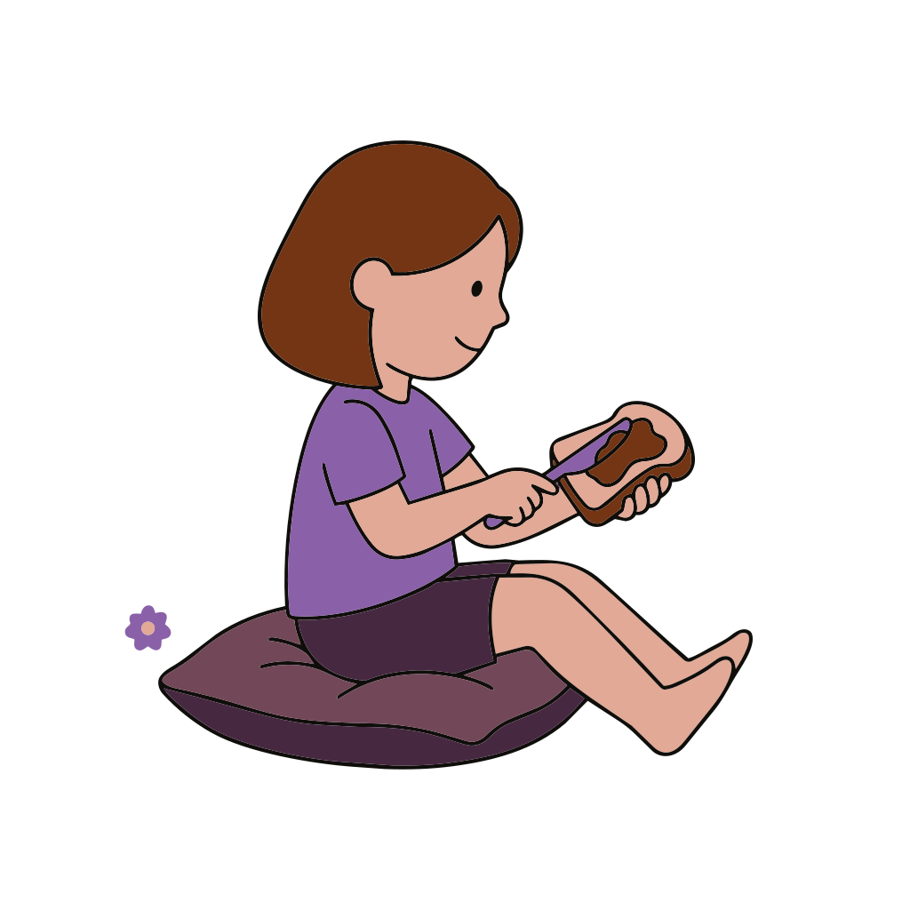
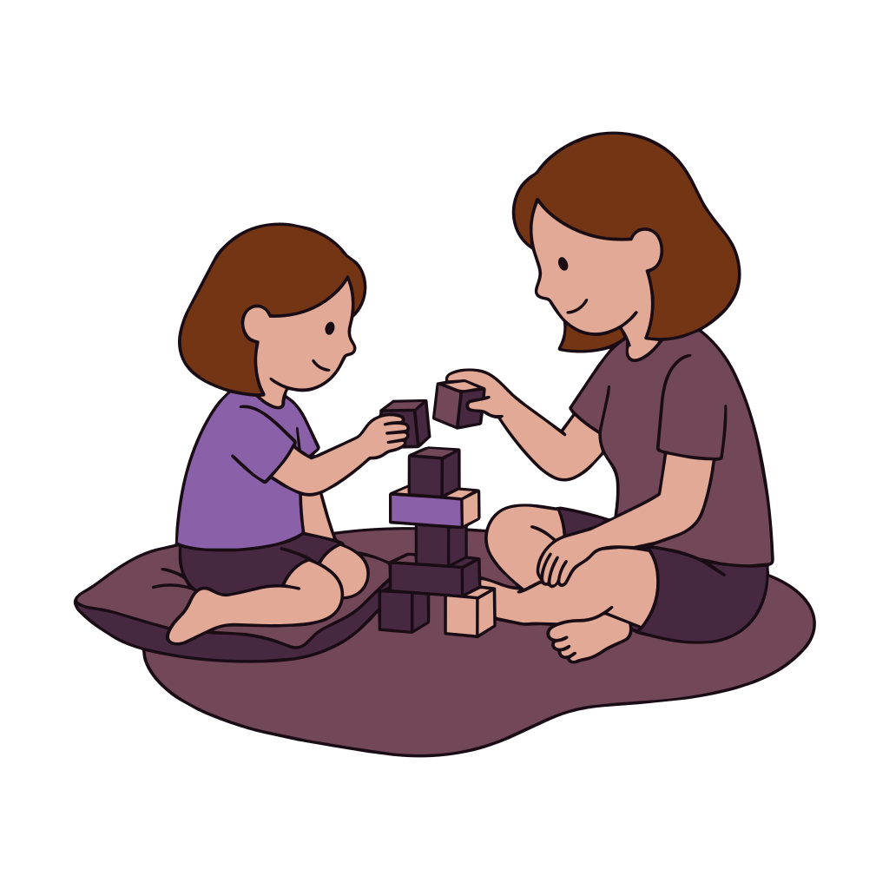
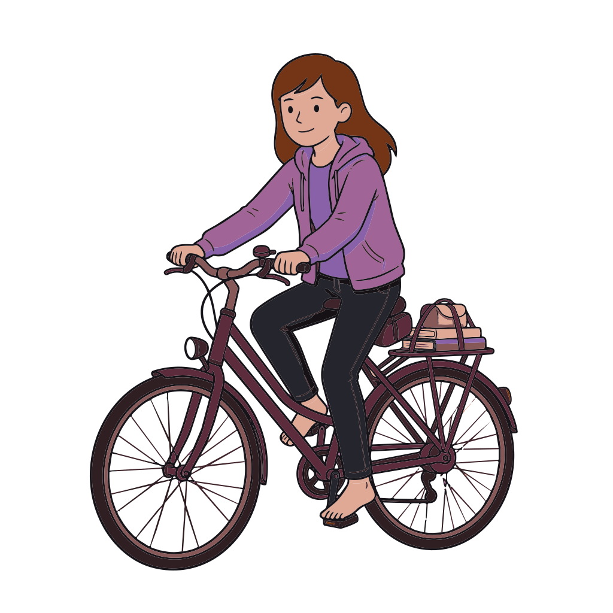
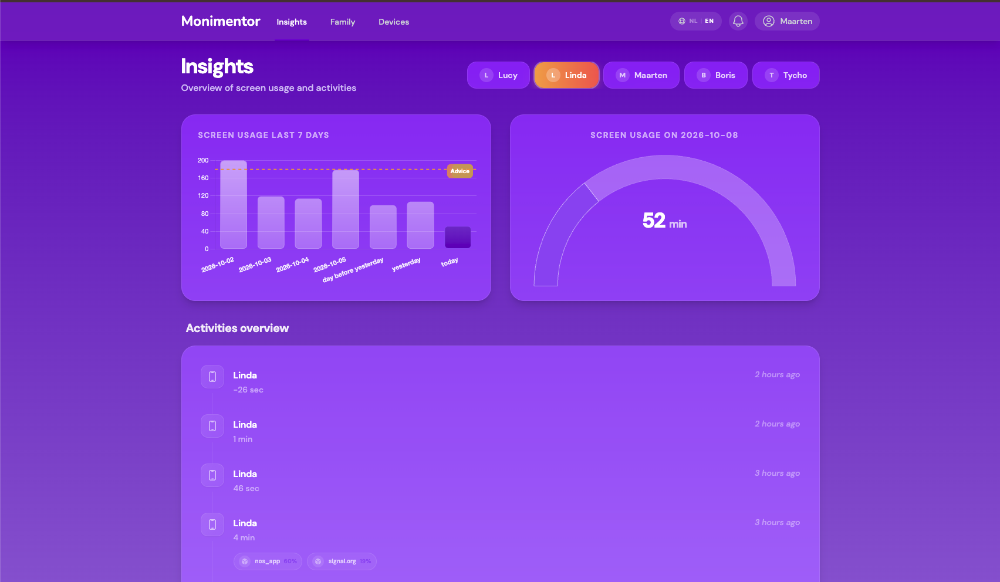
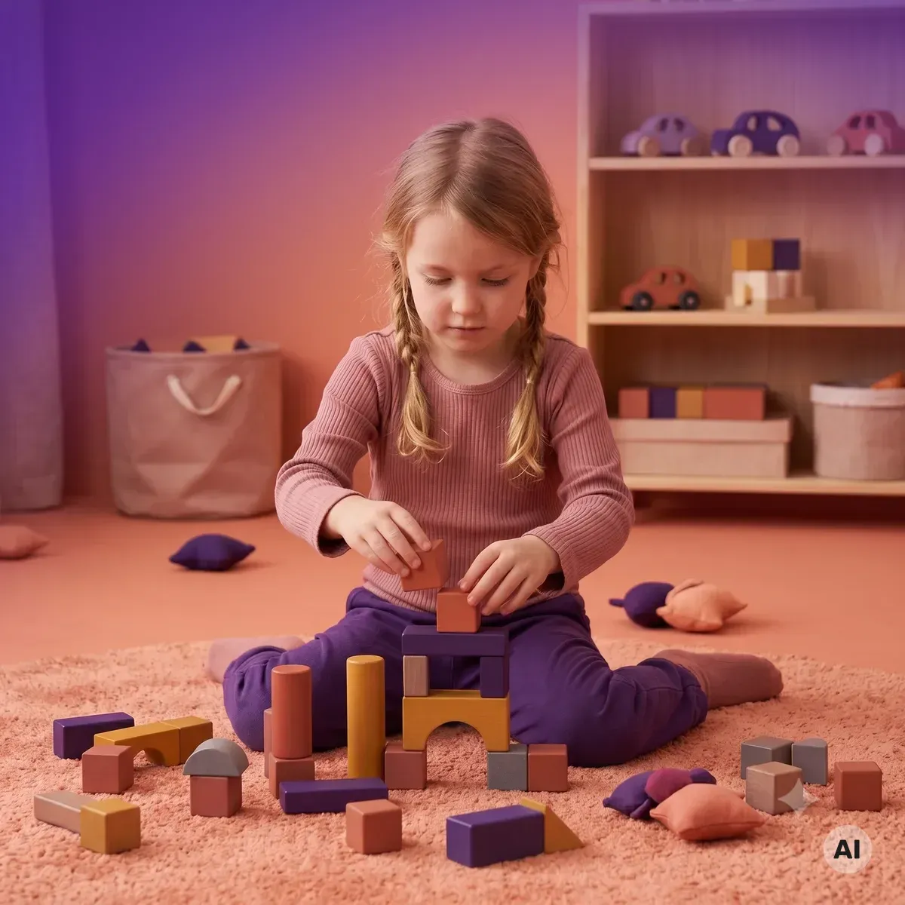
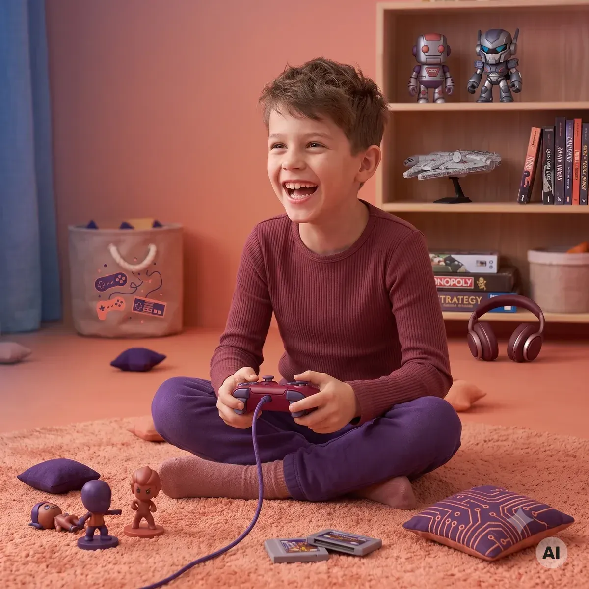
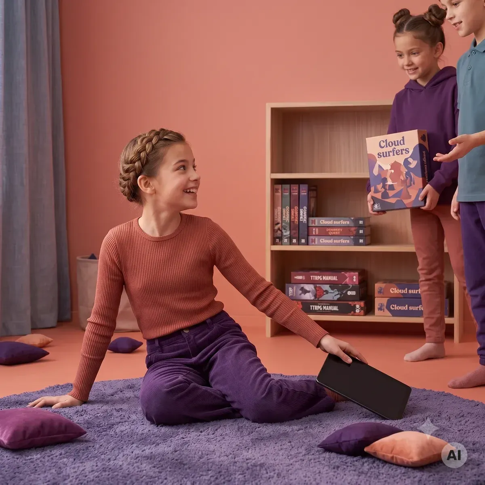
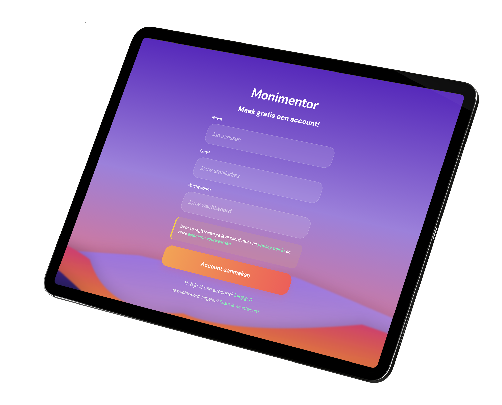

Monimentor
Your child learns to stop screen time themselves. Without arguments, and well before their first smartphone.
Monimentor is the app for parents of children ages 4–12 who want to build healthy screen habits together.
Now available for iOS (iPhone & iPad). Android waitlist →
Recognize this?
Recognize this? Every evening the same discussion when the iPad has to be put away. You don't want to be the parent who forbids everything, but neither the one who just lets it slide. And meanwhile, that first smartphone is getting closer and closer. You're not the only one looking for a better way.
Why Monimentor
Towards self-regulation with soft boundaries.
We see screens as a trampoline for curiosity. Instead of building walls, we give children the tools to learn to navigate on their own. Digital parenting becomes a journey of discovery together.
For which families
The perfect time is now

Especially at an early age (<7 years), habits are formed — healthy and unhealthy alike. The ideal time to start is before your child gets their own phone. Building healthy habits from the start is much easier than unlearning bad habits during the teen years. With Monimentor, you lay the foundation for healthy digital teen years.
The Difference
From conflict to collaboration

Autonomy instead of bans
Your child learns to stop on their own, instead of you having to take the screen away. They gain agency over their own behavior.

Insight instead of spying
No secret control or surveillance. Insight serves as a calm conversation starter at the kitchen table to discuss digital habits together.

Well before the first smartphone
Habits learned young last a lifetime. Build healthy screen routines in primary school, well before your child gets their own smartphone.
In Practice
How it works in your home.
From daily screen struggles to calm at the kitchen table: how a typical day works with Monimentor.
1. Watching & Playing
Your child watches videos or plays a game. Every minute is turned into visual energy marbles in the jar.
2. Time to wrap up
As the jar fills up, Moni mirrors this and gets tired. Your child gets a friendly visual cue to stop on their own.
3. Soft boundaries
No sudden blocks or arguments. Continuing is possible, but costs tomorrow's energy. This teaches children foresight and self-regulation.

4. Insight as a conversation starter
Parents see weekly patterns in the dashboard. Not for surveillance or spying, but as a calm baseline for open family dialogue.
What if they keep going?
The screen doesn't abruptly go black. Extra energy is deducted from tomorrow's budget. Children feel the consequences of their choices themselves.
Which devices?
Monimentor is available now for iPhone and iPad. An Android version is currently in development.
How long does setup take?
Set up in 5 minutes. Download the app, link your child's device, and start right away without complicated settings.
The Journey
We grow with your child.

The Explorer (4–7 years)
The first steps in the digital jungle. Moni provides tight frameworks for safety and direct guidance. You as a parent are the guide.

The Navigator (8–10 years)
The coaching phase. Your child learns to distribute marbles themselves, feels the consequences of choices, and can save for offline privileges.

The Mentor (10–12 years)
The safety net phase. Self-regulation is now the standard. Your child manages their own end times and Moni is a sounding board for digital literacy before the own smartphone arrives.
Parent & Expert Experiences
Peace at the dinner table, without playing the bad cop
Discover how families and media coaches experience the shift from conflict to self-regulation.
Het visueel bijhouden van de tijd brengt zoveel rust in huis. Onze zoon ziet zelf wanneer zijn energieknikkers opraken en rondt rustig af — de eeuwige discussie over schermtijd is voorbij.
Is your child ready for their first smartphone?
Getting a personal smartphone is a major milestone. Use this 10-point checklist to see if your child is ready and establish calm family guidelines together.
Get the checklist sent straight to your inbox
Early Bird Offer
Join for free and become one of our first families.
Monimentor is 100% free to download and use — no subscription fees, no ads, and no data selling. Set up in 5 minutes on iPhone & iPad.

Download the app
Install Monimentor in 5 minutes on iPhone or iPad and experience calmer screen routines right away.
100% free • No hidden fees • No data selling
Monimentor is currently available for iOS (iPhone & iPad). Join the Android waitlist here →